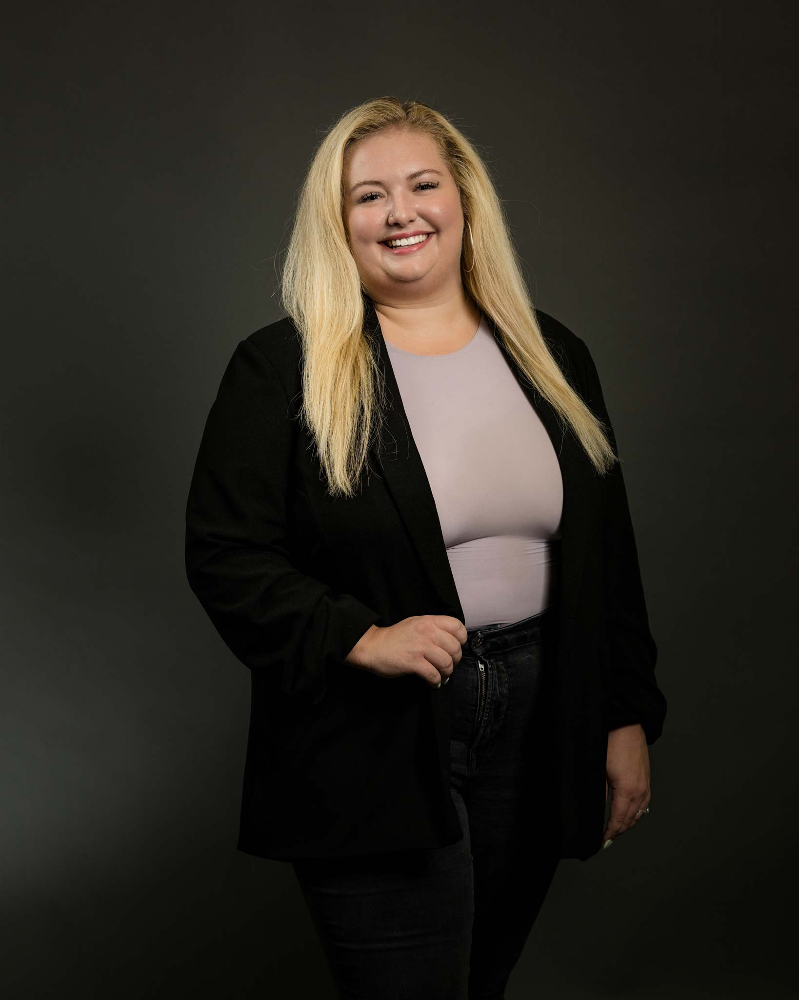

Divorce, done
with dignity
We believe the end of a marriage is not the end of a family. Embark on a transition defined by peace, mindfulness, and clarity.
Start Your Walk
We believe the end of a marriage is not the end of a family. Embark on a transition defined by peace, mindfulness, and clarity.

Just as the Japanese art of Kintsugi repairs broken pottery with gold, we see the fractures of divorce as opportunities to create something more beautiful and resilient. We don't hide the scars; we honor the journey.
Mindful Mediation
Collaborative Law
Court was not designed to resolve family conflicts. When one parent walks away feeling defeated, that pain doesn't disappear when the case is over. It shows up in co-parenting and it trickles down with their children carrying the burden of who to invite to graduation, or to the birth of their first child, because their parents can't be in the same room together.
Decisions affecting your children, your finances, and your futures are yours to make. Only you know what is best for you and your kids.
Collaborative divorce is not about fixing someone, and it is not about unpacking every issue from the past. It is not therapy, and we are not trying to repair a broken marriage.
What we are doing is helping people move forward in a more intentional way — asking how this family will function after the divorce is final, how decisions will be made, and how the resources they've worked so hard to build can be preserved rather than depleted by unnecessary conflict.
The truth is, divorce is not a legal problem. It is a family transition that happens to be legal. In every divorce, there is hurt and disappointment and fear of the unknown. Our role is to guide you through the decisions you'll need to make in a way that protects you, your family, and what matters most to you long-term.
And that little girl in the grocery store? She was my 4-year-old daughter, after time with her dad was limited by a Judge in a courtroom. In her dad's eyes, he'd "become a babysitter," so he moved out of state with 5 days' notice. That moment haunts me every time I think about it — and it is a fractured relationship she has endured every day since.
That is why we practice the way we do.
Four distinct phases designed to anchor your spirit during transition.

Creating space for emotional grounding before legal action.

Articulating your needs and family's future.
Engaging in collaborative dialogue with empathy.
Your new beginning.

"I've seen how traditional litigation quickly escalates conflict and erodes the relationships and family wealth you've worked hard to build."
Anita has supported clients through separation and divorce for more than 25 years across two states — in courtrooms, settlement negotiations, and complex custody and financial matters. Her approach shifted after witnessing firsthand how contentious proceedings profoundly affect children's lives. She practices collaborative law because she believes families deserve a better path.
Whitney brings compassionate and creative problem-solving to family law matters. A Summa Cum Laude graduate from The University of Texas at Austin, she co-founded the Texas Family Law Society during law school, combining academic achievement with a commitment to peaceful, interest-based resolution.
Her practice emphasizes collaborative divorce, child custody, child support, and mediation — prioritizing solutions that protect families and minimize conflict. She holds memberships in the State Bar of Texas's Collaborative Law, Family Law, and Alternative Dispute Resolution sections.
